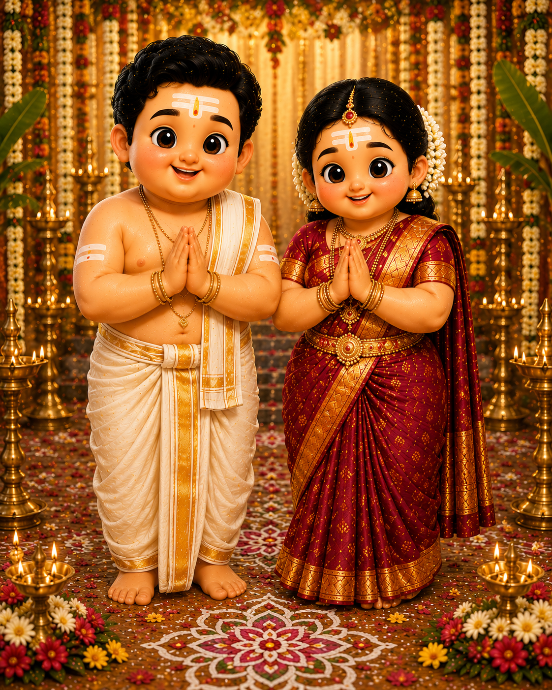

THE BRIDE
Anisha Srinivas
Daughter of Mr. P. R. Srinivas & Mrs. Shyamala Srinivas
Two hearts, one beautiful beginning.

We begin this sacred journey with gratitude to our elders, the blessings of our families and the auspicious traditions that have guided generations.
From the first invocation to the tying of the sacred thali, every ritual carries a blessing, a prayer and a promise — bringing two families together in joy.
MUHURTHAM · 8:00 AM – 9:30 AM
A traditional Iyer wedding unfolds through meaningful rituals, each carrying its own blessing and symbolism.
With the blessings of our families, we invite you to celebrate the beginning of our forever.
Daughter of Mr. P. R. Srinivas & Mrs. Shyamala Srinivas
Son of CA Srikanth & Mrs. Kala Srikanth
From the first symbolic journey to the final feast, each ritual carries a prayer, a meaning and a beautiful place in the life of the couple.
The groom sets off on a symbolic pilgrimage, until the bride's father lovingly invites him back toward family life and marriage.
The gentle swing celebrates balance, companionship and the promise of standing together through every season of life.
The bride and groom exchange garlands in a joyful expression of mutual acceptance, witnessed by their families and loved ones.
The bride's family entrusts her hand to the groom before the sacred fire, joining two families in love, duty and blessing.
The sacred mangalyam is tied with prayers for a long, harmonious and joyful married life.
With seven sacred steps, the couple invokes blessings for nourishment, strength, prosperity, happiness, family, longevity and lifelong companionship.
The bride places her foot upon the ammi, symbolising firmness, resilience and the strength to meet life's journey together.
The traditional metti is placed as a cherished symbol associated with the bride's new journey in married life.
The newly married couple is guided to behold Arundhati and Vasistha, invoking the ideal of devotion, constancy and companionship.
The couple receives the blessings of elders and loved ones as they step forward into their new life together.
The sacred celebrations conclude with a traditional Tamil Iyer feast — lovingly served on the banana leaf and shared with family and friends.
A light-hearted traditional gathering where the newly married couple share playful moments with family, laughter and blessings as the celebrations continue.
The hands that raised us, and the hearts that bring us together.

Parents & family of the bride

Parents & family of the groom
A few of our favourite frames along the way.


Near HDFC Bank, Sarojini Devi Road, Secunderabad, Telangana, India
SUNDAY, 25 OCTOBER 2026 · 08:00 — 09:30 HRS
OPEN DIRECTIONS VIEW ON GOOGLE MAPS